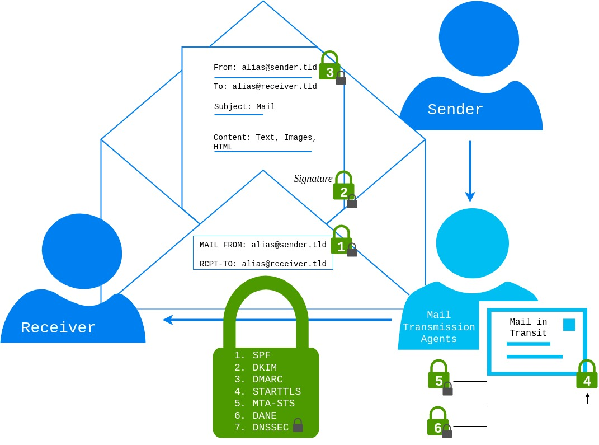

Email Security Standards
March 25, 2024

1. SPF
SPF was first defined in RFC4408 [@RFC4408] and updated in RFC7208 [@RFC7208]. It enables restriction of sending hosts by listing IPs, IP ranges, or domain names. SPF is a TXT record that begins with a version field (v=spf1) and can include multiple directives. A directive includes an optional qualifier (+, -, ?, `) and a mechanism (all,include,a,mx,ptr,ip4,ip6,exists`).
Mechanisms are evaluated from left to right and can result in a match, no match, or exception. A match returns the qualifier:
+: Pass-: Fail- ``: Softfail
?: Neutral
If no match is found, the next mechanism is evaluated. Some mechanisms cause DNS lookups (include, a, mx, ptr, exists). The maximum number of DNS lookups is limited to 10. The check function should be limited in time but should allow at least 20 seconds. Exceeding the limit should result in a temperror. If no mechanism matches, the check should return "neutral," which is the same as the ?all mechanism at the end. If no SPF record is found, it returns "None," and a permanent error (permerror) occurs for syntax errors. Finally, it is recommended to stay within the legacy max length for DNS requests of 512 octets.
2. DKIM
DKIM - DomainKeys Identified Mail was introduced in RFC4871 [@RFC4871] and updated in RFC6376 [@RFC6376]. DKIM signatures are used to sign the email header and body. It provides authenticity for the email sender and ensures that data was not modified during transit. Sending mail providers publish a TXT record of a specific format. Selectors allow multiple DKIM entries for a single domain. The receiver can verify the signature using the selector to request the associated DKIM DNS entry.
The format of a DKIM signature is a tag list. Important tags are:
v: Version field (currently 1)a: Signing algorithm (RFC6376 mentions SHA1 and SHA256)b: Signature databh: Body hashd: Domains: Selector
Optional tags include:
c
: Canonicalization (either "simple" or "relaxed")
- Default is "simple," which allows no modification in transit
- "Relaxed" header allows lowercase conversion of header field names and whitespace adjustments
-
"Relaxed" body allows removing whitespaces at the end of lines and ignoring empty lines
-
t: Signature timestamp (number of seconds from Jan 1, 1970 UTC) -
x: Signature expiration time -
i: Sender email address -
z: List of original message headers
The DKIM DNS entry includes three tags:
v: Version fieldk: Algorithmp: Public key
With the right selector, the public key can be retrieved, enabling signature verification.
3. DMARC
DMARC [@RFC7489] - Domain-based Message Authentication, Reporting, and Conformance matches the From header to an authenticated domain via SPF (MAIL FROM) or DKIM (d=). DMARC entries are of type TXT and have a specific format. An example DMARC entry might look like this:
The first two tags are required, and others are optional:
- Required:
v=: Version field (currently DMARC1)p=: Policy to apply in case of a mismatch (none: no action, quarantine: mark as spam, reject: reject mail during the SMTP transaction)- Optional:
pct=: Percentage of emails to which the policy should be applied (default 100%)adkim=: Strict/relaxed domain match for DKIMaspf=: Strict/relaxed domain match for SPFfo: Failure report options ($<"0"/"1"/"d"/"s">$)rf=: Format for failure reports (default "afrf")ri=: Interval between aggregated reports (default 86400s = 24h)rua=: Email address for sending aggregated reportsruf=: Address for sending message-specific failure informationsp=: Set a different policy (p tag options) for subdomains
6. DANE
DANE @RFC6698 - DNS-Based Authentication of Named Entities allows stating valid certificates for a domain via DNS records. This replaces the necessity for CAs as trusted third parties for TLS. Authentication of named entities is realized via TLSA records. In order to trust and guarantee the authenticity of TLSA records (to prevent MITM and DNS cache poisoning scenarios), it requires using DNSSEC-capable resolvers. To support multiple certificates for multiple applications under one domain, TLSA records follow a specific format. The numbers before the certificate association data field specify how to handle the data, what data it includes, and how it is presented.
$<0-3>$Certificate Usage provides four options on how to handle the certificate-association-data to verify the TLS server certificate:- 0) Specifies CA cert., valid trust chain required (CA constraint)
-
- Certificate represents end-entity cert., valid trust chain required (service cert. constraint)
-
- Specifies CA cert., no valid trust chain required (trust anchor assertion)
-
- Specifies end-entity cert., no valid trust chain required (domain-issued cert.)
$<0-1>$TLSA Selectors specify what information is included in the certificate data:- 0) Whole certificate is hashed, certificate association data has to be updated for each certificate renewal
-
- Only
SubjectPublicKeyInfois hashed, no update required if the same private key is used
- Only
$<0-2>$TLSA Matching Types specify the representation type of certificate-association-data:- 0) Raw data
-
- SHA-256 hash
-
- SHA-512 hash
7. DNSSEC
(First introduced in 1999 with RFC2535 [@RFC2535], reworked in 2005 with RFC4033) - Provides authenticity for DNS records. Authenticity is realized by signing DNS entries. DNS entries of the same type are grouped into Resource Record Sets (RRsets). Each zone uses a private zone signing key (ZSK) to sign RRsets and publishes them as RRSIG entries. A resolver can verify the signature using the public ZSK stored in a DNSKEY DNS entry.
Another layer of signing keys is introduced: key signing keys (KSK) are used to sign ZSK. Verification again uses a DNSKEY entry that contains the public KSK. From a security perspective, the KSK is like the key to your front door, while the ZSK is used for your inner doors. By using two keys, the ZSK can be changed more easily, with shorter key lengths, reducing the size of DNS responses and verification time.
The next step is to provide a Delegation-Signer (DS) record, a signed hash of the KSK in the parent zone, to establish a chain of trust. This step is repeated for each domain level until the root zone is reached. Changing the KSK requires updating the entries in the parent zones.